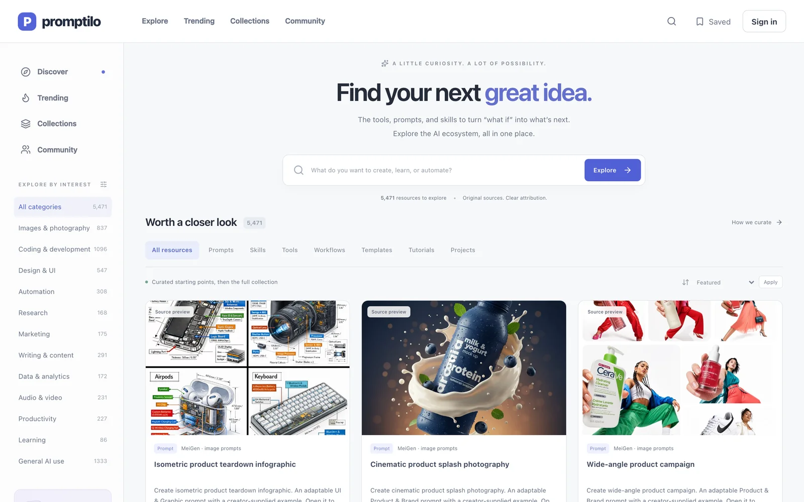

Product strategy · UX · Engineering · Growth
A better way to find what AI can do.
Promptilo turns thousands of scattered prompts, skills, tools, workflows, templates, tutorials, and projects into one visual, source-backed discovery platform.

5,471 indexed resources7 resource formatsOriginal sources retained
PROJECT SNAPSHOT · Independent discovery product · Working implementation
Help people evaluate a resource before saving it.
Search, comparable resource types, source trails, collections and an inspectable sample editorial decision with public feedback.
- My contribution
- Information architecture, product/interface design, trust model and full-stack implementation.
- Evidence and status
- Product captures and a local study reviewed 24 October 2026. Catalog volume is build scope; the study’s illustrative decisions do not establish live moderation or retrieval success.
- Read this case for
- Start from intent. Keep the original source attached. Separate discovery from publication.
Audience, delivery context and scope
- Primary task and audience
- Initial design hypothesis: a designer finding a reusable form workflow for a recurring product deliverable.
- User problem
- A large resource catalog does not establish relevance, permission to reuse an item or confidence in its original source.
- Constraint shaping the decision
- Automated discovery is broader than editorial approval; uncertain sources must not acquire a trusted label.
- Current artifact
- Product captures and a local study reviewed 24 October 2026: search, details, saving and explicit editorial decisions with matching public feedback. No connected publication service is demonstrated.
- Delivery record
- Portfolio iteration: 20 October 2026. Actual classification tests, observed relevance, trust comprehension, original project dates and useful-return cohorts are unavailable.
- MVP boundary
- Automatic publication and claims about search effectiveness until representative retrieval and trust tasks have been observed.
01 · The problem
Discovery was fragmented. Trust was optional.
Professionals were jumping between repositories, social posts, directories, and private bookmarks. Every source used different language, different metadata, and different quality signals.
Product decision: build around the job a person wants to complete, then keep the source and its limitations visible.
02 · Product capability map
A complete library, not a gallery.
Each capability supports one of four product jobs: discover, evaluate, retain, or govern.
Intent searchSearch by what you want to create, learn, or automate.
Layered filteringType, category, source, profession, and ranking controls.
Source previewsReal examples stay connected to their creators.
Rich resource pagesOutcomes, instructions, examples, metadata, and related paths.
Curated collectionsOrdered learning paths for specific professional goals.
Saved libraryFavorites and personal collections for signed-in members.
Trending researchA separate discovery queue for emerging resources.
Community layerSubmissions, votes, ratings, comments, and review.
Source operationsScheduled updates with last-known-good retention.
Editorial CMSCreate, preview, publish, archive, and restore content.
Role securityMember ownership and admin controls enforced in the database.
Responsive accessDiscovery and detail flows built for desktop and mobile.
03 · Product showcase
Five real product states. One coherent experience.
Choose a capability to inspect the interface. Every image below is a current product screenshot captured from the working application.
Unified discovery5,471 resources shaped around user intent and comparable visual evidence.
04 · Product system
Discovery can scale. Trust still needs a gate.
Promptilo separates broad discovery from publication. Automated collection expands coverage. Validation and editorial review protect the trusted library.
A failed source never clears trusted records.Last-known-good data stays available while the source is investigated.
Useful
resource
Search surfaceIntent matchSave and returnDeeper contextresource
05 · Digital growth
The product structure is the acquisition strategy.
Categories, professions, formats, collections, and resource pages create useful entry points for specific professional intent.
Intent-shaped landing surfaces
Each page answers a distinct question instead of repeating one generic value proposition.
Connected internal journeys
Collections and related resources turn one useful answer into continued exploration.
Freshness with boundaries
Trending resources enter a review queue before they can become trusted library content.
06 · Trust by construction
A source link is not enough.
Trust comes from keeping evidence, limits, ownership, and publication state visible across the full product.
Provenance
Creator, source collection, reuse terms, dates, and external signals stay attached to each item.
Moderation
Community submissions and comments enter review. They are never silently promoted into trusted content.
Authorization
Members control only their own saved content. Administrator permissions are verified by the database.
07 · Evidence of execution
Built across the full product surface.
The evidence comes directly from the working product and its codebase.
Product strategyOutcome-led discovery
UX architectureSearch state in the URL
Full-stack buildNext.js · TypeScript · Supabase
Digital growthStructured intent surfaces
A COMPLETE TASK
Follow the decision, including recovery.
Search by a job
Enter a query, narrow its format and recover from an empty combination without losing saves.
Inspect before saving
Open creator, original source, freshness context and reuse limits. Return to the same query and filters.
Review an exception
Choose the fictional unavailable-source condition and apply a hold. Preparing a different draft condition keeps the applied public decision intact.
See the public consequence
The card and source details show the same applied revision and reason. Explicitly merge the duplicate, inspect its canonical source and return to the same query, format and saves. The candidate stays unsavable.
Inspect the current interaction
Alternative considered and selection criteria
- Alternative
- Publish every collected resource immediately
- Chosen direction
- Separate discovery candidates from reviewed resources
- Reason and cost
- A visible review boundary protects provenance; it requires exception handling and a clear public explanation.
DECISIONS AND TRADEOFFS
Why this behavior earns its place.
Start from intent
Resource types differ, but a person arrives with something to make, learn or automate. Intent shapes the initial search.
Tradeoff. More taxonomy can increase filtering effort. Ambiguous resources and no-result tasks need evaluation.
Keep the original source attached
Preview, creator, date and reuse terms support a decision about whether a resource is appropriate.
Tradeoff. A source link alone is not a quality endorsement. Unknown terms or stale content must remain visible.
Separate discovery from publication
A draft review condition does not change the applied public decision. An explicit hold or duplicate decision updates the candidate’s card and detail together, while preserving the canonical source.
Tradeoff. Unverified candidates stay unsavable. The local revision history demonstrates the boundary; it does not establish a connected publication pipeline or source-verification service.
WHAT THE WORK ESTABLISHES
Delivery, observation and next evidence.
| Evidence | What you can inspect | What remains unestablished |
|---|---|---|
| Product output | The existing case documents seven resource formats, a source-backed catalog and editorial controls. | Resource counts are implementation facts, not active users or measured search quality. |
| Interaction study | The local study includes query/format recovery, saved resources and matching editorial/public revisions. A duplicate resolves to its canonical source without changing the search context. | Its small sample catalog and fictional review conditions demonstrate behavior, not search ranking quality, real source uptime or user understanding. |
| Next evidence | Observe task-based retrieval and interpretation of provenance/reuse signals. | Successful task completion, trust comprehension, mobile usability and repeat useful return are not yet established. |
- Product output
What you can inspectThe existing case documents seven resource formats, a source-backed catalog and editorial controls.
What remains unestablishedResource counts are implementation facts, not active users or measured search quality.
- Interaction study
What you can inspectThe local study includes query/format recovery, saved resources and matching editorial/public revisions. A duplicate resolves to its canonical source without changing the search context.
What remains unestablishedIts small sample catalog and fictional review conditions demonstrate behavior, not search ranking quality, real source uptime or user understanding.
- Next evidence
What you can inspectObserve task-based retrieval and interpretation of provenance/reuse signals.
What remains unestablishedSuccessful task completion, trust comprehension, mobile usability and repeat useful return are not yet established.
The interaction examples make design decisions inspectable. Participant findings, endorsements and business outcomes are included only when an actual record is available.
08 · Builder perspective
Let people judge a resource before saving it.
Keep. Keep creator, source, publication state and reuse limits next to the resource. The unapproved sample makes the consequence of missing provenance visible.
Change next. Review search labels and the detail hierarchy against actual professional tasks before adding catalog breadth. A large index cannot establish that the right resource is easier to find.
Question to test. Which source and freshness signals do people understand when choosing a resource? Observe retrieval and trust decisions, then revise one misunderstanding and check it again.